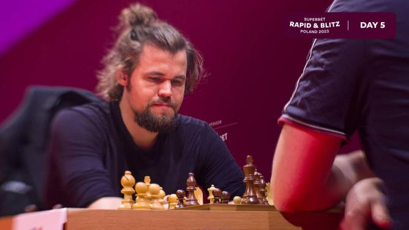

GM Magnus Carlsen and GM Jan-Krzysztof Duda fought a memorable and
thrilling final round of the Superbet Poland Rapid & Blitz 2023, where the
former held his nerve to hold a draw and win the event with a score of 24
points and pocket the top prize of $40,000 and 13 Grand Chess Tour points.
Duda finished second with 23 points for $30,000 and 10 GCT points, while
GM Wesley So and GM Maxime Vachier-Lagrave tied for third and fourth
places with 21.5 points to pocket $22,500 and 7.5 GCT each. Carlsen began
the fifth and final day where he left off from the previous day, extending
his winning streak to 7/7. At one point, he even scored a blistering 10.5
points from 11 games between the 14th to 24th rounds. He overtook the
overnight leader Duda by the 20th round and extended his lead to two
points by the 23rd round. However, Duda caught up to just a point below
him at the end of the penultimate round, and Carlsen fended off a spirited
challenge from Duda in the final round to draw the game and finish a point
ahead of the rest of the field.Carlsen's play on the final day was a case
of continuing to employ off-beat openings with the black pieces,
effortlessly converting advantageous positions, outplaying his opponents
with trademark technique from equal endgames, and keeping his nerve and
playing steadily under pressure—be it in difficult positions or under the
pressure of the clock.With a 1.5 points lead over Duda, Carlsen faced his
stiffest challenge of the entire day from GM Levon Aronian in the
penultimate round, who seemed to have a huge advantage at one point. This
game was one of the highlights of the day.This draw allowed Duda to come
within a point difference in the standings with just the final round left
when they faced each other. It proved to be a fascinating clash between
these two players, who delighted chess lovers with their play throughout
the event. It was a highly tense affair with so much drama, producing our
Game of the Day